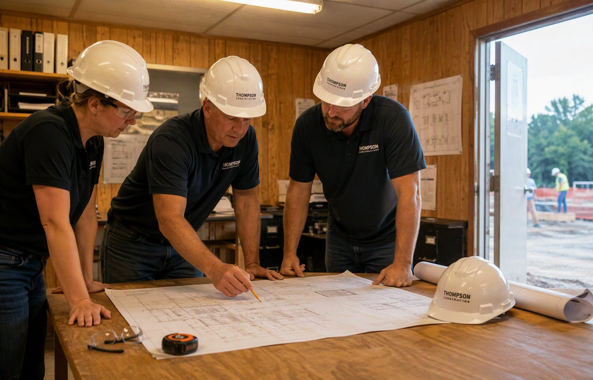
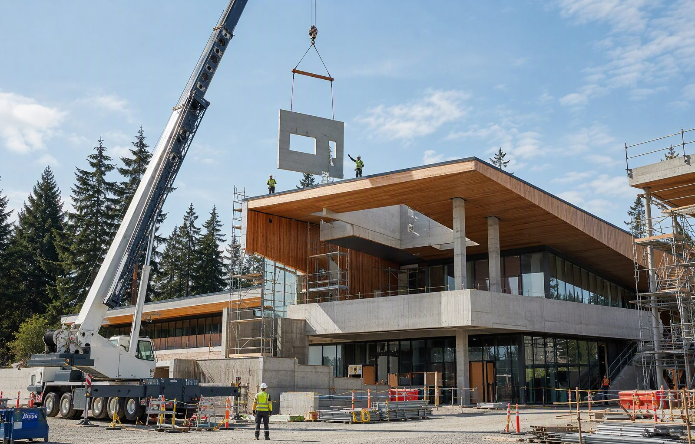

Custom Safety Plans
A complete program written around your Victoria operation – hotel, clinic, jobsite, or harbour – inspection-ready and sized to your team.
Learn More
British Columbia's capital runs on public service, a $7.9-billion tech sector, and a tourism industry that brings millions of visitors through the Inner Harbour every year. Alcantara Safety Solutions builds WorkSafeBC-aligned safety plans, compliance reviews, and risk assessments for Greater Victoria employers – on-site, fixed-fee, and sized for the Island's business culture.
Victoria's economy is more diverse than its government-town reputation suggests. The provincial public service anchors the region, but technology is now Greater Victoria's largest industry by economic impact – roughly $7.9 billion a year across more than 1,100 firms employing over 20,000 people, with a stated trajectory toward $10 billion by 2030. Tourism remains a pillar: millions of visitors a year, close to $2 billion in annual spending, and tens of thousands of jobs in hospitality, retail, and attractions. Around those sit the healthcare and education sectors, a working marine and harbour economy, and a construction industry kept busy by one of the province's tightest housing markets – plus a planned new ferry terminal in the downtown core that will add major marine construction to the mix.
That mix creates a compliance landscape with unusual range. A government contractor bidding facilities work, a software firm with forty ergonomic workstations, a harbour tour operator, a hotel housekeeper, and a heritage renovation carpenter all answer to the same WorkSafeBC OHS Regulation – but to almost entirely different parts of it. Victoria employers also contend with the capital region's distinctive building stock: heritage structures where asbestos, lead paint, and aged building systems turn routine renovation into hazardous materials work.
Alcantara Safety Solutions serves employers across Greater Victoria – Victoria proper, Saanich, Esquimalt, Langford, Colwood, View Royal, Oak Bay, and the West Shore. We work on-site throughout the capital region, writing programs from scratch against the Regulation, your industry's requirements, and the Island's practical realities: tight labour markets, seasonal workforce swings, and procurement processes that increasingly treat safety documentation as a condition of doing business.

The capital region's public sector supports a deep bench of contractors – facilities maintenance, IT services, consultants, custodial operations, and trades – all working under procurement frameworks that increasingly demand documented safety programs as a condition of award. Public-sector clients hold their vendors to public-sector standards: documented orientations, clear procedures, incident statistics, and WorkSafeBC standing. We write the programs and pre-qualification packages that let Victoria contractors compete for government and institutional work with their documentation already in order – and we build right-sized programs for the professional firms themselves, covering the office-employer obligations many forget they have.
Victoria's visitor economy – hotels, attractions, tour operators, marinas, and the cruise and ferry gateways – runs on young workers, seasonal hiring, and public-facing operations. The compliance profile is well known to WorkSafeBC: chemical handling in housekeeping and maintenance, late-shift violence prevention, lift and mechanical systems at attractions, and the orientation obligations that attach to every seasonal hire. We build hospitality programs that busy general managers can actually maintain: plain-language procedures, orientation systems that survive a summer hiring surge, and documentation that satisfies both inspectors and the insurers who increasingly ask the same questions.
The capital region's health and education employers – clinics, care homes, home support providers, schools, and campus operations – carry some of the Regulation's most specific requirements: violence prevention programs, safe patient handling, exposure control plans for biological hazards, and musculoskeletal injury prevention for care work. Senior care in particular faces intense scrutiny, and the sector's staffing pressures make systematic orientation non-negotiable. We write healthcare programs that address the hazards inspectors actually cite, in formats frontline leaders can deliver.
Victoria's working harbour – moorage and marine services, vessel maintenance, harbour tours, and the shipyard activity across the water in Esquimalt – concentrates the marine compliance stack: work over water with rescue and PFD requirements, confined spaces in vessel environments, hot work, and the dock and moorage hazards that never fully retire. The planned downtown ferry terminal will add major marine construction to the region's workload. We write marine programs sized for harbour operators and marine trades – practical, testable, and built for multi-employer waterfront sites.
Victoria's construction sector works under unique constraints: a tight urban core, extensive heritage stock, and a renovation culture shaped by preservation rules. Pre-1990 buildings must be assumed to contain asbestos until assessed, and heritage-era structures add lead paint, aged electrical, and structural unknowns to the hazardous materials picture. Infill and West Shore growth add conventional residential and ICI work at pace. We write construction programs that treat hazardous materials assessment as the first step of every renovation – because in Victoria's building stock, it is.
Capital region employers face the same province-wide OHS Regulation, but Victoria's sector mix shapes local enforcement priorities. Hospitality and healthcare – two of the region's biggest employers – are among WorkSafeBC's most-inspected industries, with violence prevention, safe patient handling, and young-worker orientation drawing consistent attention. In construction, hazardous materials top the list: the region's older building stock makes asbestos assessment failures one of the most common and most serious citation categories on Island files.
Two Victoria realities shape our programs. First, procurement pressure: between provincial ministries, municipalities, school districts, and the health authority, the capital region's institutional buyers expect safety documentation as standard, and COR certification carries increasing weight in public procurement. Second, seasonality: tourism and hospitality scale their workforces dramatically with the visitor season, and every seasonal hire triggers orientation obligations from day one. We build orientation systems designed for surge hiring – fast, consistent, and documented to inspection standard.
Every engagement starts with your operation, not a template. These are the services Greater Victoria employers ask for most:

A complete program written around your Victoria operation – hotel, clinic, jobsite, or harbour – inspection-ready and sized to your team.
Learn More
Assessments covering kitchen and housekeeping hazards, care environments, heritage building materials, and waterfront work across the capital region.
Learn More
A gap review of your documentation against the OHS Regulation and the procurement standards of the capital region's institutional buyers.
Learn MoreGreater Victoria is in our on-site service area, and we work across the capital region – downtown Victoria, Saanich, Esquimalt, Langford, Colwood, and the West Shore. We walk your facility, jobsite, or vessel before writing a word, because the details that make a plan defensible are the ones you can only see in person.
Engagements run on a fixed fee quoted before we start: discovery and walkthrough, draft program in about two weeks, a working session with your supervisors or managers, then final documents and a plain-language briefing. For seasonal operations, we schedule so orientation systems are in place before your hiring surge – not in the middle of it.
Ready when you are: call (778) 954-1988 or contact us – we typically respond within two business days.
Yes – our capital region service covers Victoria, Saanich, Esquimalt, Langford, Colwood, View Royal, Oak Bay, and the surrounding communities, all on-site. Island employers get the same walkthrough-based approach we use across our core service area.
More than most hospitality employers realize: documented orientation for every worker (especially young and seasonal staff), WHMIS training for cleaning and kitchen chemicals, safe work procedures for burns, cuts, and lifting, a bullying and harassment policy, violence prevention measures for late-night operations, first aid coverage analysis, and incident reporting. We build hospitality programs that general managers can maintain – practical, plain-language, and sized for real kitchens and housekeeping departments.
With assessment, before disturbance. Pre-1990 buildings must be assumed to contain asbestos until a qualified hazardous materials assessment proves otherwise, and heritage-era structures add lead paint and aged building systems to the picture. Work that disturbs suspect materials without assessment is among the most serious – and most cited – violations in the capital region's renovation market. We build the assessment, notification, and safe-work procedure requirements into your project process from the start.
Yes. The capital region's public buyers – provincial ministries, municipalities, school districts, health authority facilities – routinely require documented safety programs in procurement, and COR certification is increasingly weighted. We prepare the program documentation and pre-qualification packages these processes ask for, and map the COR path for contractors ready to pursue it.
By systemizing before the season. Every seasonal hire triggers new and young worker orientation obligations from their first shift, and summer-scale hiring punishes improvised processes. We build orientation systems designed for surge hiring: consistent content, plain-language delivery, documented comprehension, and supervisor checklists – so a June onboarding wave is routine, not a compliance gap.
Also serving: Nanaimo · Courtenay & Comox · Campbell River · Vancouver · All 16 Service Areas
Industries we serve: Construction · Landscaping · Civil & Infrastructure · All Industries
Contact us – we will identify exactly which WorkSafeBC requirements apply to your operation and quote a fixed fee before we start.
Contact Us